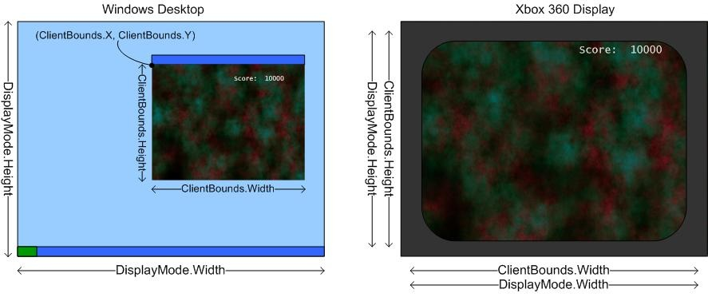

What Is a Viewport?
A viewport is a 2D rectangle that defines the size of the rendering surface onto which a 3D scene is projected.
A viewport is represented by the Viewport class. The Width and Height properties of the rectangle are used by methods for a variety of calculations such as creating a projection matrix using CreatePerspectiveFieldOfView. Viewport dimensions default to the dimensions of the back buffer, but they can be a different size. For example, to create a split screen game, you might render multiple viewports to a single render target. The viewport dimensions do not correspond to the display dimensions, which are determined by the DisplayMode property, or to the game window, which is determined by the ClientBounds property.
Use the Clear method to reset a render-target surface. Overloaded versions accept various parameters such as a set of rectangles that define more specific areas rather than the entire surface. Specify in the ClearOptions enumeration which buffer or render target to reset.
Use the Clear method to clear stencil bits within a depth buffer. Set the options parameter to determine which render-target components are cleared. The color argument sets the color value of the render target after it has been cleared. The depth parameter clears the depth buffer to the specified depth: 0.0 is the closest distance, and 1.0 is the farthest. Finally, the stencil parameter resets the stencil bits to the specified value. Use integers ranging from 0 to 2n−1, where n is the stencil buffer bit depth.
Desktop Area Versus Display Area
The size of the desktop area in Windows is shown by the DisplayMode Width and Height properties. The display area is different from the game window, which can be obtained from the ClientBounds dimensions. On Windows, set the display mode width and height to match the back buffer width and height. This prevents the need to resize the back buffer when switching between windowed and full screen mode. On Xbox 360, you need to display the text and menu items within the inner 80 percent of the display area. This prevents text or menus from getting cut off at the edge of a television screen. This inner area is called the title safe area.
The game window size is shown by the ClientBounds Width and Height properties. The game window size matches the display size when a game is running in full-screen mode. The game window size may be smaller for a game running in windowed mode. Use ClientBounds.X and ClientBounds.Y for the upper-left coordinates of the game window relative to the display area. On Xbox 360, the ClientBounds Width and Height properties are always equal to the DisplayModeWidth and Height, and ClientBounds.X and ClientBounds.Y are always (0, 0).
Figure 1. DisplayMode and ClientBounds areas on Windows and Xbox 360.

See Also
© 2012 Microsoft Corporation. All rights reserved.
© 2023 The MonoGame Foundation.